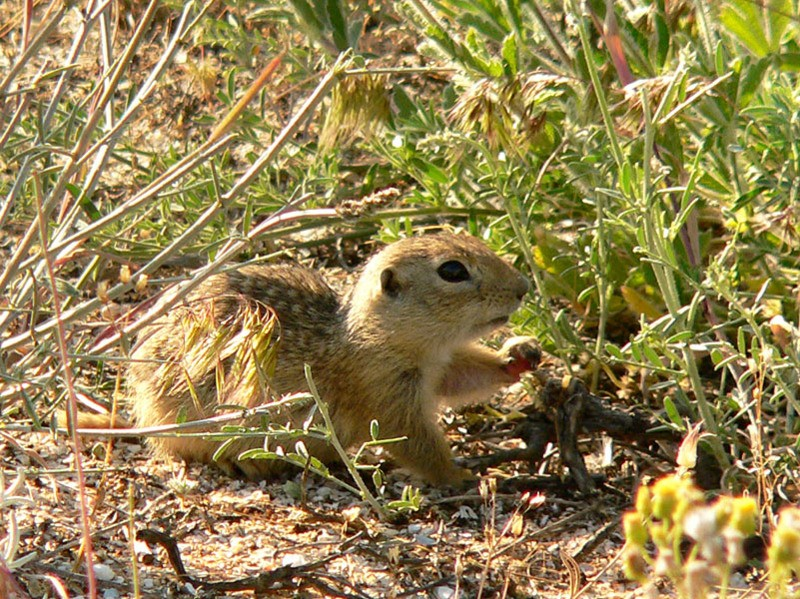
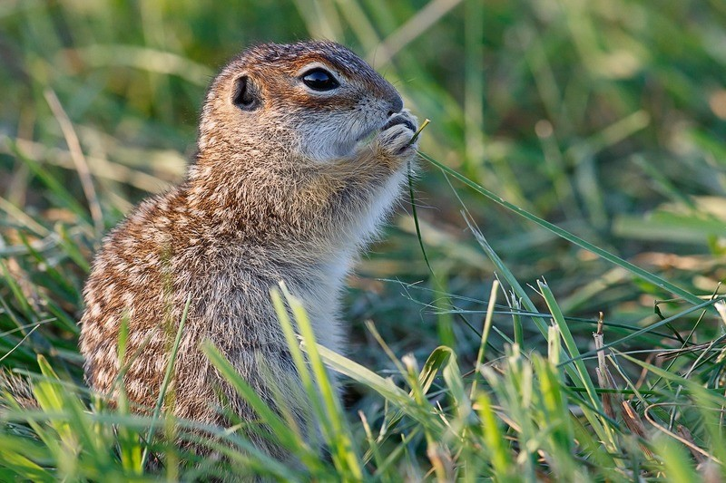

Крапчатый суслик (Spermophilus suslicus) считается одним из самых мелких представителей среди своего рода. Местом обитания является степь и возвышенная местность. Суслик встречается в центральной и восточной части Европы. Он селится на черноземе, недалеко от открытой местности. Максимальная длина взрослой особи составляет 220 мм.
Крапчатый суслик (Spermophilus suslicus) считается одним из самых мелких представителей среди своего рода. Местом обитания является степь и возвышенная местность. Суслик встречается в центральной и восточной части Европы. Он селится на черноземе, недалеко от открытой местности. Максимальная длина взрослой особи составляет 220 мм.
Длина тела грызуна составляет от 17 до 26 см. Вид отличается коротким хвостом до 5,5 см. средний вес не превышает 0,5 кг. Животное имеет большие, выдающиеся вперед глаза. Самцы более крупные, чем самки.
Окрас грызуна напрямую зависит от места обитания и основного пропитания. Покров из волос короткий, не очень густой. Шерсть плотно прилегает к толстой коже. На хвосте волосы более длинные, пушистые.
Чем моложе грызун, тем ярче рябь. Голова имеет другой окрас, нежели тело. Вокруг глаз светлые участки, напоминающие сплошное кольцо. Под глазами есть темные пятна. Голова и верхняя часть горла светлая. Кариотип грызуна содержит 34 хромосомы.
Грызун обитает в степной местности. Его можно встретить на лугах, недалеко от лесополос. Местом обитания являются возвышенности. Они используются, как пастбища. В неблагоприятных условиях грызун выживает неподалеку от сухих балок.
В городской местности животное прячется в старых садах или заброшенных сооружениях. Низина подходит только для временного проживания, когда животное нуждается в пропитании.
Корм растительный. Преимущественно грызун питается злаками: овсяница, пшеница, рожь. В отдельных случаях животное употребляет травы – клевер и тысячелистник.
Суслики также употребляют в пищу насекомых, которые водятся на лугу в летний период. Грызуны делают небольшие запасы. В зимнее время рацион почти отсутствует из-за спячки.